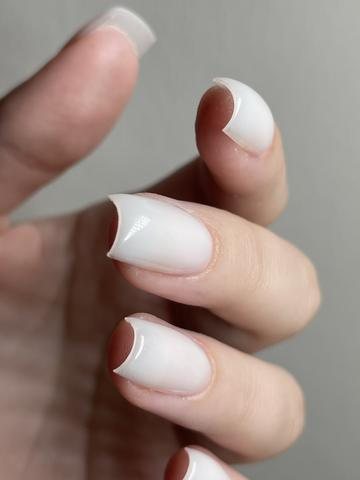
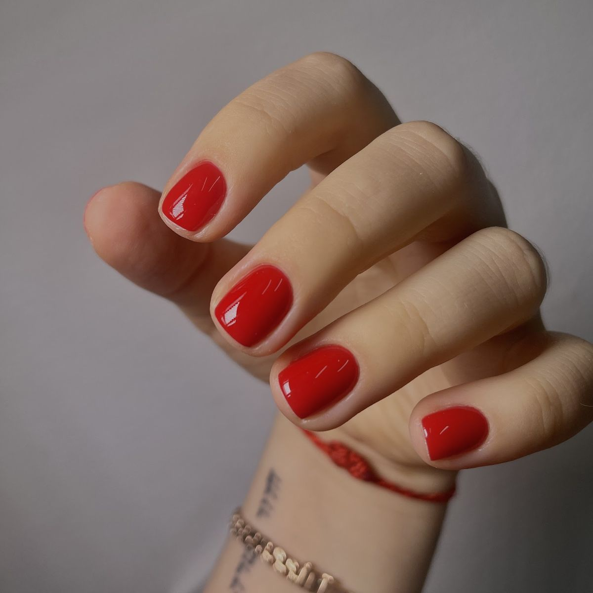
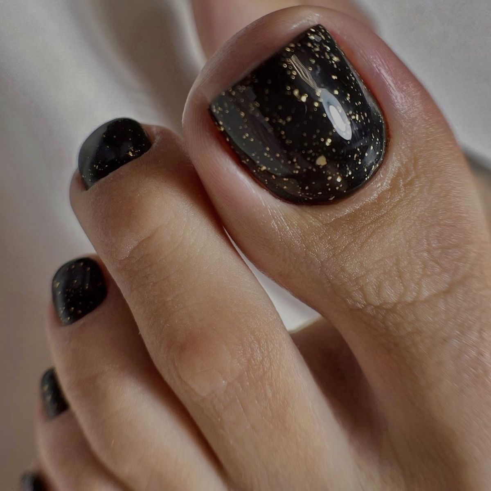
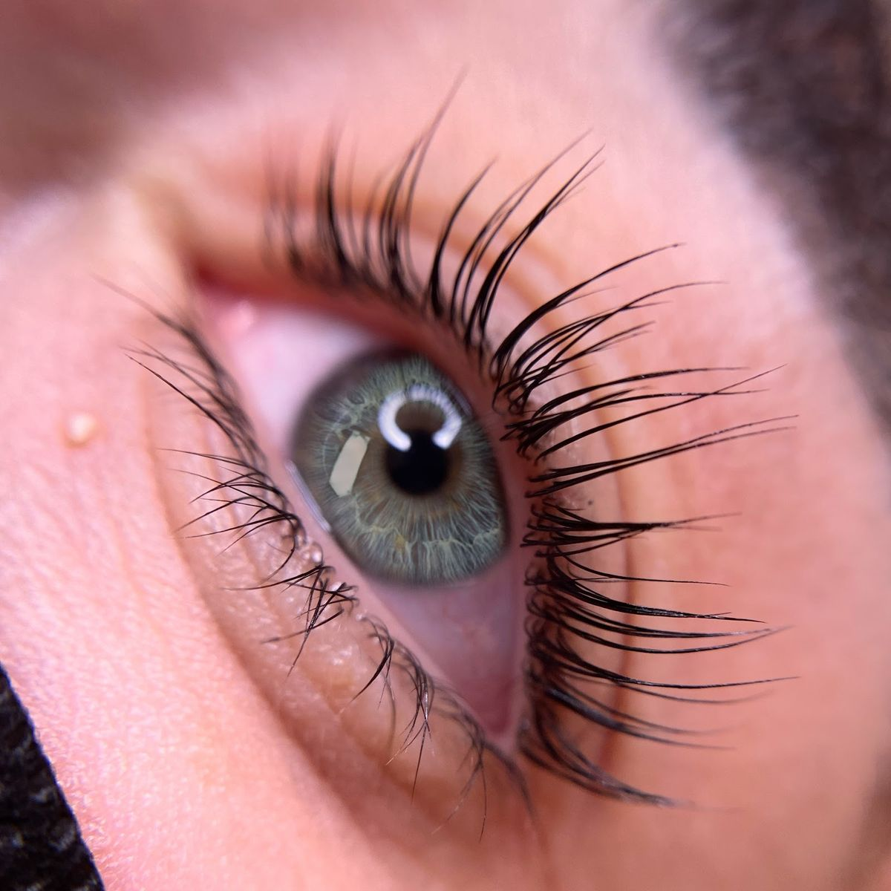
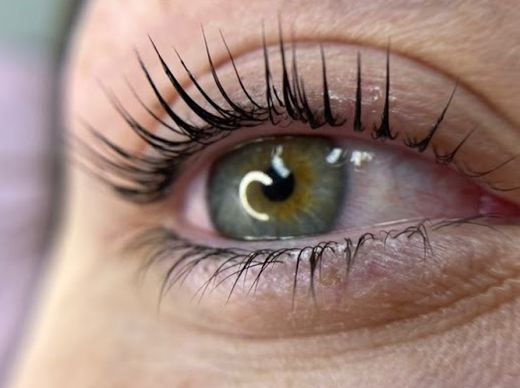
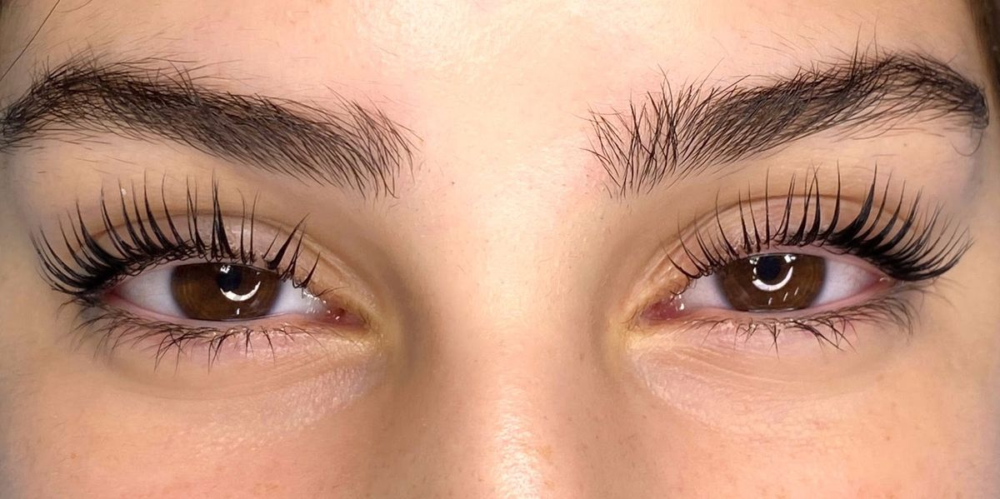
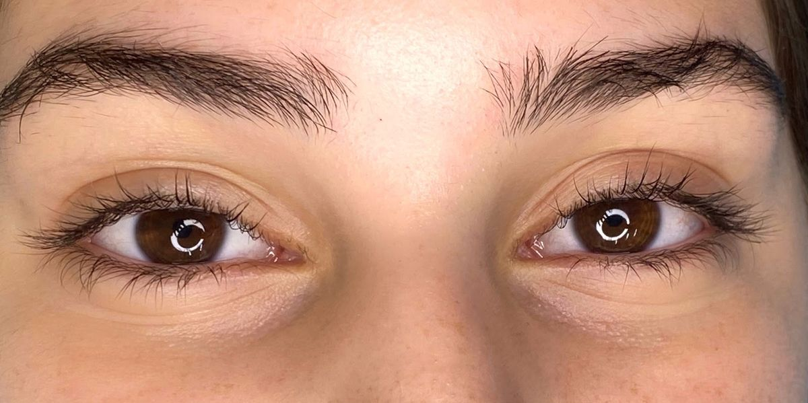
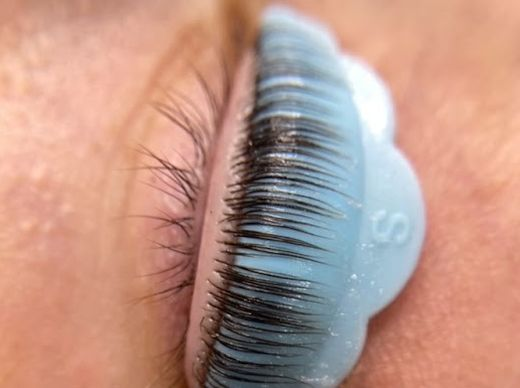

ידייםHands
לק ג'ל, מילוי ומניקורGel polish, fills and manicure

תור לציפורנייםBook nailsעבודה מהסטודיוWork from the studio
קונספט לדוגמה שנבנה עבור אביבה דיימונד · זה אינו האתר הרשמי של העסקA sample concept built for Aviva Diamond · This is not the business’s official website

ציפורניים, ריסים וגבות בדרך צרפת 38, חיפהNails, lashes and brows on 38 Derech Tsarfat, Haifa
4.8· 53 ביקורות בגוגל· 53 Google reviewsלק ג'ל, מילוי ומניקורGel polish, fills and manicure

תור לציפורנייםBook nailsעבודה מהסטודיוWork from the studio

פדיקור וג'ל לרגלייםPedicure and gel for feet
גוונים מהעבודות בסטודיוShades from the studio’s work
תור לפדיקורBook a pedicureעבודה מהסטודיוWork from the studio

הרמת ריסים וסידור גבותLash lift and brow shaping

תור לריסים וגבותBook lashes & browsעבודה מהסטודיוWork from the studio
הרמת ריסים בסטודיו. גררו את היהלום.Lash lifts from the studio. Drag the diamond.


ידיים, רגליים ומבט, במקום אחד בדרך צרפת.Hands, feet and eyes, in one place on Derech Tsarfat.
מניקור, ג'ל ומילוי ציפורנייםManicure, gel and nail fills
פדיקור וג'ל לרגלייםPedicure and gel for feet

בתהליךIn progressהתוצאהThe resultמהכרית לתוצאהFrom the pad to the result
״מסדרת בדיוק כמו שביקשתי״“Shapes exactly as I asked” (translated from Hebrew)
Galya sonde
אפשר לבחור יותר מאחד.Pick one or more.
ראשון עד שישי. בשבת סגור.Sunday to Friday. Closed on Saturday.
בוקר, צהריים או ערב.Morning, midday or evening.
4.8 בגוגל, מ-53 ביקורות.4.8 on Google, from 53 reviews.
״עשיתי אצל דשה סידור גבות מילוי בג'ל וג'ל רגליים. עבודה מקצועית יסודית ונקייה, לא פוצעת לא עושה עבה ומסדרת בדיוק כמו שביקשתי מאוד מרוצה״
“I had my brows shaped, a gel fill and gel on my feet with Dasha. Professional, thorough and clean work, she doesn’t hurt, doesn’t overdo it and shapes exactly as I asked. Very happy.”
״סטודיו מקסים עם זמינות מאוד גבוהה ורמת מקצועיות גבוהה. אביבה, בעלת המקום מאוד נעימה ותמיד עומדת לרשות הלקוחות בכל שאלה. אני מאוד מרוצה!״
“A lovely studio with great availability and a high level of professionalism. Aviva, the owner, is very pleasant and always there for clients with any question. I’m very happy!”
״יש אווירה מאוד נעימה ומקצועית. כל הבנות מאוד מוכשרות ומרגישים שחשוב להן שתצאי עם תוצאה יפה.״
“A very pleasant, professional atmosphere. All the girls are very talented, and you can feel it matters to them that you leave with a beautiful result.”
״המקום היחיד שהציפורניים שלי שורדות. מקצועניות יסודיות אווירה נעימה, דשה התותחית עוד לא ראיתי רמת מקצועיות כזאת, מיקום נוח עם חניה, ממליצה!!!״
“The only place where my nails survive. Thorough professionals, a pleasant atmosphere, Dasha is brilliant, I’ve never seen this level of professionalism, a convenient location with parking. Recommended!!!”
דרך צרפת 38, חיפה. המפה למטה.38 Derech Tsarfat, Haifa. The map is below.
טליה ליושין כתבה בביקורת שלה: ״מיקום נוח עם חניה״.Talia Lyoshin wrote in her review: “a convenient location with parking” (translated from Hebrew).
ראשון, שני וחמישי 9:00–19:30 · שלישי ורביעי 9:00–20:00 · שישי 8:00–15:00 · שבת סגור.Sunday, Monday and Thursday 9:00–19:30 · Tuesday and Wednesday 9:00–20:00 · Friday 8:00–15:00 · closed on Saturday.
לק ג'ל ומילוי, מניקור ופדיקור, ג'ל לרגליים, הרמת ריסים וסידור גבות.Gel polish and fills, manicure and pedicure, gel for feet, lash lifts and brow shaping.
באינסטגרם של הסטודיו: @aviva_daimondOn the studio’s Instagram: @aviva_daimond